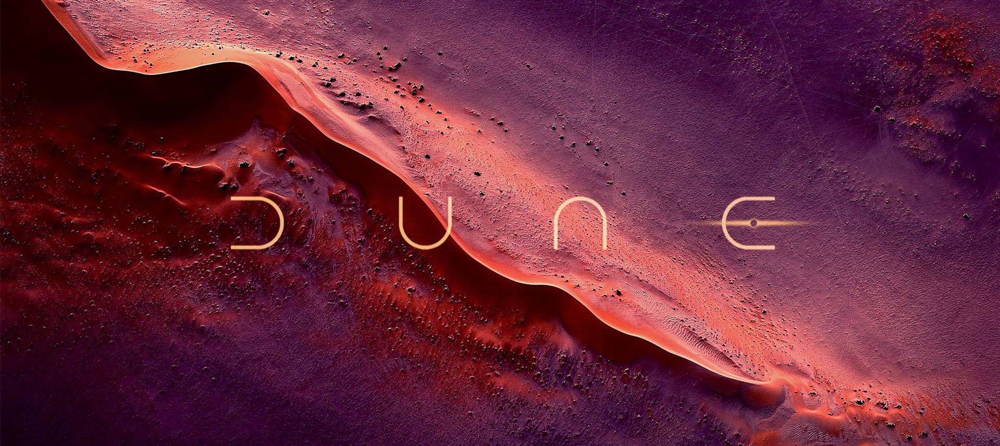
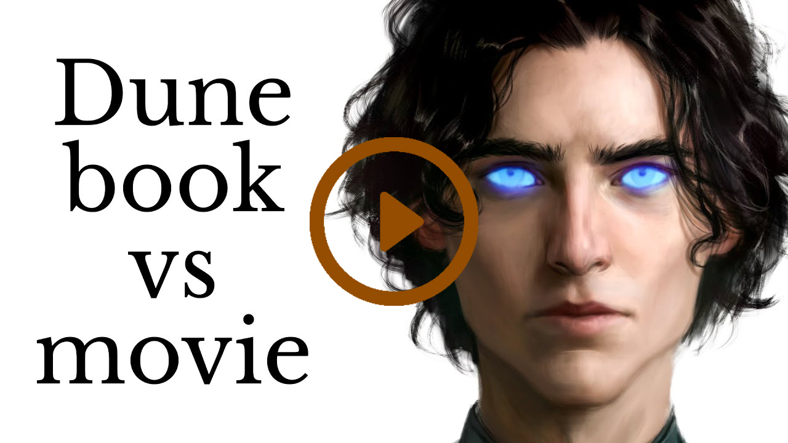

"Dune" is a very special book. It was written by Frank Herbert
and has fascinated people for a long time. The story takes place
in a faraway future where people can travel between stars and where
there are a lot of secrets and plots. "Dune" is loved for its
rich world, interesting characters, and important ideas about life.
I was first introduced to the film, and being completely surprised
by how huge the world was in the film with its own stories and lore,
I decided to dive into the book. In the distant future, on the desert planet
of Arrakis, a tale of power,
prophecy, and destiny unfolds.
Here, amidst shifting sands and
ancient secrets, noble houses vie
for control of the coveted spice
melange. Young Paul Atreides,
thrust into this treacherous world,
faces trials that will shape empires.
'Dune' is an epic of grandeur and danger,
a story that transcends time itself,
beckoning you into its intoxicating world.
Plot
In the distant future, humanity's interstellar
empire is built on a single, coveted resource: melange,
the Spice of Arrakis. Arrakis, a harsh desert planet, holds
the monopoly on this substance, and whoever controls it wields
unimaginable power.
The Atreides, led by Duke Leto, are granted control of Arrakis,
setting the stage for political intrigue and treachery. Leto's son,
Paul, is thrust into a perilous journey. He discovers he may be the
prophesied Kwisatz Haderach, a being with the ability to bridge time
and space, and alter the course of history. As the Atreides confront
their enemies, the mysterious Bene Gesserit sisterhood, and the formidable
House Harkonnen, Paul's destiny converges with the fate of Arrakis itself.
With the desert's nomadic people, the Fremen, Paul forms an alliance that
could change the course of the universe. "Dune" is a tale of epic scope,
delving into themes of power, religion, and environmentalism. Frank Herbert's
world-building is meticulous, creating a rich tapestry of cultures and technologies.
The narrative is woven with deep philosophical insights, exploring the complex interplay
between human ambition and ecological balance.
Herbert's prose evokes the harsh beauty of Arrakis, from its towering sand dunes to its hidden,
subterranean realms. Characters are complex, their motivations layered and often morally ambiguous.
Through Paul's journey, the reader grapples with questions of identity, destiny, and the consequences
of wielding power. As political intrigue unravels and battles rage, "Dune" transcends mere science
fiction, becoming a philosophical meditation on the human condition. It's a story that resonates
across generations, leaving an indelible mark on the genre and captivating readers with its timeless relevance.
Frank Herbert's masterpiece invites you to venture into a world of limitless possibilities, where destiny unfurls
in the heart of the desert.

In this insightful video, the expansive world
of Frank Herbert's Dune is explored beyond
the confines of the 2021 film adaptation.
Delving into the intricacies and depth of
Herbert's universe, the video sheds light
on the unspoken nuances that may have been
left untold on the silver screen. It navigates
through the vast political landscapes, the
intricate web of characters, and the profound
philosophical underpinnings that shape the narrative.
Ultimately, the video serves as an invaluable
companion piece, enhancing the audience's
appreciation for the immense depth of Herbert's
literary masterpiece and the boundless potential
for future cinematic explorations of the
Dune universe.